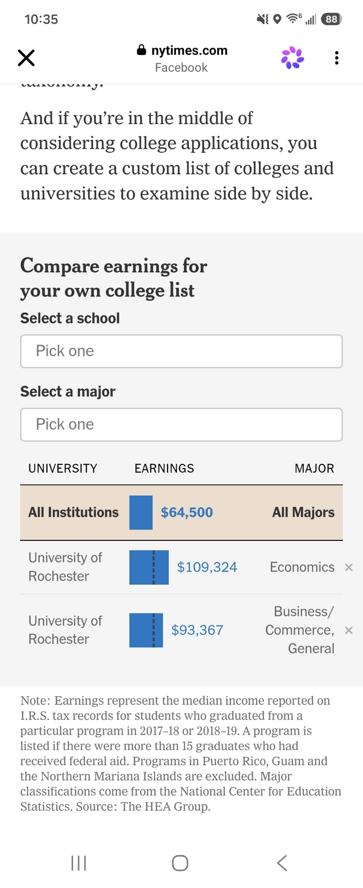
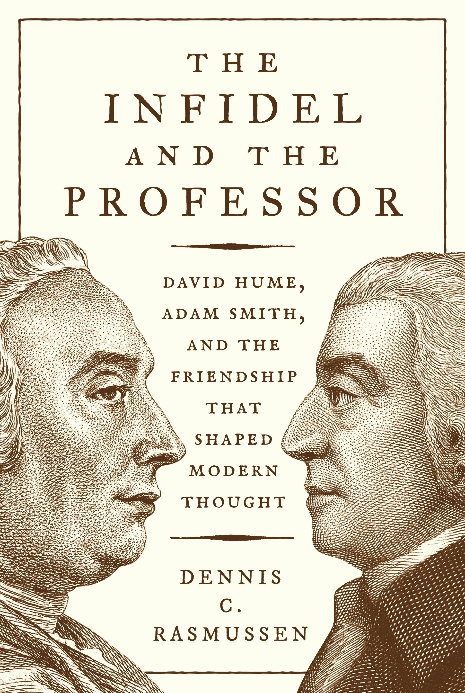

WEEKLY REMINDERS/ANNOUNCEMENTS – EWOT, Week 7
Readings and Topics this Week: We will be moving on to the primary question of “how did all of this happen” and “can we continue to do it?” along with pondering some of the undesirable consequences of our growth experience.
You can continue reading through BOTH Sections B and C of the reading list at your leisure. The week after, we will be finishing up the “Ideas” section of “what changed”, so focus on Part C of the reading list.
Recitation:. Look for a note from your TAs
Weekly AssignmentS: We have decided YOU DO NOT HAVE ANYTHING DUE ON OCTOBER 11. Enjoy the break. If you want to get a head start, we have already posted the subsequent week’s work for both October 18 and October 25.
For the October 25th assignment, we are screening the film Ameican Graffiti, it will be screened on Tuesday, and Wednesday, and Thursday, from 7pm to 10pm in B&L 109. If you cannot make any of these sessions, you will use an exemption for the week.
Exam: I will be handing out the exams in class on Friday. If you do not come to class, please arrange for return of exams with your TA.
Before you ask about the exam, please read the syllabus regarding grading and exam policies.
I am not releasing the course grade distributions.
My Availability
I will not be available until Tuesday evening. Call Alexa or Katherine if there is a serious issue, and they will route communication to me. Feel free during the week to call or text.
Check out Rochester events, office hour times and locations, department information, and up to date news and job opportunities (as they come to me) visit us at tiny.cc/RizzoHours. I update my calendar weekly on that page, and include other sometimes useful information on it for you.
This Week at Rochester
STAFF PICKS STAFF PICKS
Thursday · Economics: Pablo Peña: Human Capital for Humans
3:30 PM · Morey 321. The University of Chicago economist presents an accessible introduction to the economic science of people.Thursday–Thursday · Theater: Big Love
Opens tonight at 8 PM in Smith Theatre and runs six times in this week’s window. Fifty brides, fifty cousin-grooms, Greek myth, comedy, brutality, and the costs of resisting tradition. TICKETED.Friday–Monday · Music: Gateways Music Festival weekend
George Taylor’s 40th-anniversary recital, Black sacred music, a BLACKSOUND lecture, Shana Tucker’s ChamberSoul, Ric’key Pageot, and young musicians across Eastman.Saturday · Sports: Rowing and a NYU soccer doubleheader at home
Head of the Genesee rowing starts at 10 AM in Genesee Valley Park; men’s soccer hosts NYU at 11 AM and women’s soccer hosts NYU at 1:30 PM at Fauver.Saturday & Sunday · Music / Theater: Peer Gynt with John de Lancie
Saturday 7:30 PM and Sunday 2 PM · Kodak Hall. The Star Trek actor narrates a semi-staged English-language Peer Gynt with the RPO. TICKETED.Monday · AI / Health: Healthcare in the Age of Frontier Models
3:30 PM · Class of ’62 Auditorium. Coalition for Health AI CEO Brian Anderson on medicine in the frontier-model era.Thursday, October 15 · Politics / Technology: Disrupting Politics
Noon–1 PM · Online. Former Facebook elections-policy leader Katie Harbath joins David Primo to discuss technology, democracy, misinformation, AI, and the 2026 midterms. FREE · RSVP REQUIRED
Upcoming Special Events
The Politics and Markets Project, Moderated Panel Discussion Hosted by Professor David Primo
Title: AI and privacy (both thinking about government regulation and things like surveillance pricing, or, getting good deals!)
Date: Wednesday, November 4th
Time: 7:30pm to 8:30pm
Location: Wegmans Hall, 1400.
More Info on the PMP: Follow on Instagram
Department of Economics PIZZA and PAYOFFS Special Event

Title: Pizza and Payoffs: Everything you wanted to know about the Econ major — courses, careers, and what you can actually do with an economics degree.
Who: Professor Lisa Kahn and special guest Chris Nosko
Date: Monday, November 9
Time: 5:30pm to 7:00pm
Location: TBD
More Info: Chris Nosko is the head economist for Amazon! Very short department information session and lots of time for Q&A and discussions with Nosko and our department faculty.
Department of Economics Annual GILBERT LECTURE (walk around Harkness to see a little bit of its history)*

Title: TBD
Who: Robert Staiger, Chief Economist of the World Trade Organization
Date: mid-November
Time: TBD
Location: TBD
More Info: Learn more about Professor Staiger here.
THE GILBERT LECTURE
The Donald W. Gilbert Memorial Lecture is one of the great traditions of the University of Rochester Department of Economics.
Donald W. Gilbert was deeply tied to both the University and the city of Rochester. A Rochester native and East High graduate, he entered the University in 1917, graduated in 1921, earned a master’s degree in economics at Rochester, studied at Harvard, and then spent nearly his entire professional life at UR. He rose from instructor to professor and chair of Economics, became dean of graduate studies, and in 1948 became the University of Rochester’s first provost. During his leadership of graduate education, Rochester was admitted in 1941 to the Association of American Universities, then a very small group of the leading research universities in the United States and Canada.
Gilbert also believed strongly that economics should reach beyond the classroom and seminar room. He helped create the University of Rochester Management Clinics, which connected the University with dozens of Rochester businesses and industrial organizations, and he was heavily involved in civic and public-policy life. When he died in 1957, at only 57, President Cornelis de Kiewiet described him as one of the University’s most important links to the Rochester community.
After Gilbert’s death, his friends, colleagues, alumni, and former students established a memorial lecture in his honor. The goal was entirely consistent with Gilbert’s career: bring serious economics to bear on the difficult practical and policy problems of the day.
The first Gilbert Lecture was delivered on April 30, 1959, by the great public-finance economist Richard Musgrave, speaking on the federal budget and the American economy. What followed was an extraordinary run of speakers. In the first decade alone, the series included Paul Samuelson, Milton Friedman, Kenneth Boulding, Wassily Leontief, Robert Solow, and James Tobin.
Over the following decades, Gilbert lecturers have included many of the most important economists of the modern era: Kenneth Arrow, Arthur Lewis, George Stigler, Franco Modigliani, Gary Becker, Robert Fogel, Thomas Schelling, James Heckman, Vernon Smith, Peter Diamond, Richard Thaler, Michael Kremer, Paul Romer, and many others.
Remarkably, 18 Gilbert lecturers later received the Nobel Prize in Economics.
Just as important as the names are the subjects they came to Rochester to discuss: unemployment, inflation, economic growth, population, pollution, regulation, Social Security, technological change, development, financial crises, education, health care, inequality, international trade, and the institutions that shape economic life.
The Gilbert Lecture is not simply a celebration of famous economists. It promotes the particular idea about that Rochester economics takes the tools of the discipline and aims them at the world outside the classroom.
One final Rochester detail: Gilbert Hall is named for the same Donald W. Gilbert, another reminder of how significant he was to the development of the University.
Supply and Demand Mechanics Lab
Look for an announcement from our TA staff
Some Items that Caught Our Attention
When Free Markets (Massively) Favor Workers: and we don’t like it. “General managers and front office staffers surveyed by ESPN generally agreed with Elko's take. In the NFL, there's no shortage of veterans such as Case Keenum who can be called up at a moment's notice for heroic cameos. In college, if they're not starting, they're leaving.
Oregon getting a masterful performance out of Dylan Raiola off the bench at USC was remarkable to watch, but Raiola is one of the rare exceptions among his peers as a former two-year starter at Nebraska who was willing to take a pay cut and sit behind Dante Moore for a season. Very few programs have the luxury anymore of a backup they'd trust to go win a game.”
COVID 19 Candy Bars: 'we find that P-EBT disbursement was associated with a 16-percent increase in weekly spending on sugary items among SNAP-eligible households with school-aged children. Notably, this increase exceeded the percentage increase in overall food spending for this group, suggesting that SNAP-eligible households with school-aged children allocated a disproportionately large share of their P-EBT-driven purchases toward sugary items relative to their pre-period baseline. "
Competence, Aborted: “Gov. Kathy Hochul was one of a handful of Democratic governors to stockpile pills used in medication abortion amid fears the U.S. Supreme Court could restrict access three years ago. But a feared shortage of the drug never materialized. Now, 150,000 pills in the state’s possession have all expired — and not a single one was distributed. “
Paper that finds NOTHING tries to convince you it finds something. “The program increased advanced math participation and STEM/business degree completion by about 5.5 percentage points, but produced no statistically significant overall increase in college entry or graduation. The abstract buries that result in subgroup detail and a STEM category that includes social sciences. The paper does not establish earnings gains or whether the educational changes justify the program’s costs.”
Tylenol and ADHD: “Prevalence of ADHD and autism was not significantly different in birth cohorts exposed to the recall during gestation, when maternal acetaminophen use would have been reduced; interrupted time series models showed no significant differences compared to underlying temporal diagnostic trends.”
Valedictorian Inflation: “Most schools went test-optional during the COVID-19 pandemic as testing sites became less accessible, meaning students could decide whether they wanted to submit scores. More recently, some colleges are once again requiring students to submit scores, Lockwood said, as a means of differentiating between high-achieving students. Case in point: Jericho High School had a record- breaking 21 valedictorians in 2026. All 21 received an A-plus in every class over four years of high school.”
“What the AI boom is doing for Americans It’s not just “of, by and for oligarchs”. Noah Smith on Datacenters.
Ban Data Centers! Explain how it’s bad like I’m 5. Recently, Claude, after scanning massive amounts of genetic data, spotted an unknown structure that looks similar to CRISPR and could advance our ability to edit genes. Anthropic tested this new “enzyme system,” dubbed “ART,” in its wet lab, where researchers found even more similarities to CRISPR — huzzah! For context, CRISPR is a natural defense system that recognizes invading DNA and rips it to shreds to disable viruses; scientists have hijacked this capability to edit all kinds of DNA, recently using it to create an FDA-approved therapy for sickle-cell disease. ART is still relatively new, but if we’ve discovered a CRISPR-esque natural defense system, that’s huge. And Claude did this in 21 hours! Some Abundance himbos are dwelling on the hypothetical “risks,” but it’s time we stop treating fake risks as real and real benefits as fake. Will ART cure cancer tomorrow? No. Is it objectively miraculous that Claude found this thing? In less than a day?? Yes
Just Get Rid of the Dead Wood: Raj Chetty, John Friedman and Jonah Rockoff found that students assigned more-effective teachers were likelier to attend college and earned more as adults. Replacing a bottom 5% teacher with an average one for a year, they estimated, increases one classroom’s combined lifetime earnings by $250,000 in present value. Education also improves health and civic participation.
Non-Profits = Low Feedback, And this is what you get, college edition: A recent study at MIT shows that since the mid-1980s, the student body has grown about 8 percent and faculty about 9 percent, while the number of administrators has increased by 189 percent. There are now more nonteaching administrative staff than students at Harvard, Yale, and Stanford.
…The University of California system promised that $170 million in spending on a single digital infrastructure project would cut administrative bloat by $753 million over its lifetime. Instead, the project took seven years and ballooned to $942 million in cost — and the finished project was so poorly designed and difficult to use that an entirely new IT unit had to be created just to keep the software functional. The savings on staffing were zero.
* * * * *
WINTERCOW’S MOOING: Crabpotism and Antisocial Punishment. Creepy voice podcast here; Need some time to make it sound better, suggestions welcome.
CHART(S) OF THE WEEK: You decide.

PHOTO OF THE WEEK: Blue Mountain Lake. For those interested, use ChatGPT to look at what this view looked like 150 years ago. Then appreciate that we no longer need the Adirondacks for mining, fuel, food and tanning.

VIDEO/DOCUMENTARY/BOOK/CARTOON, ETC OF THE WEEK: “While skepticism is often associated with nihilism and paralysis, Hume suggests that it actually tends to lead to inner tranquility, intellectual humility, and a passion for ever-further inquiry.”

* * *QUOTE * * *
“So often in life, things that you regard as an impediment turn out to be great, good fortune."
- Ruth Bader Ginsburg